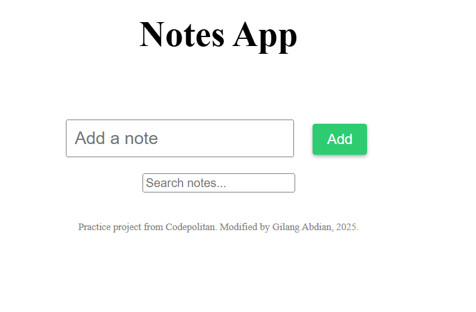

Todo App Interaktif dengan React.js State dan Event
Todo App ini dikembangkan sebagai bagian dari pembelajaran
React.js dengan fokus pada penggunaan state, event handler, dan
penyimpanan data lokal. Dalam proyek ini, saya mempraktikkan
penggunaan useState untuk mengelola data secara dinamis, serta
useEffect untuk menyimpan dan memuat data dari Local Storage agar
tetap tersimpan meski halaman direfresh. Aplikasi ini mendukung
berbagai fitur seperti menambahkan, mengedit, menghapus, dan
menandai tugas sebagai selesai. Selain itu, terdapat fitur
pencarian catatan secara real-time, konfirmasi sebelum
penghapusan, serta pengaturan tema gelap dan terang (dark mode
switch). Dengan memanfaatkan React Developer Tools, saya juga
belajar memantau perubahan state dan memahami alur data dalam
komponen. Proyek ini membantu saya memperdalam pemahaman tentang
pengembangan aplikasi interaktif dan user-friendly menggunakan
React.js.